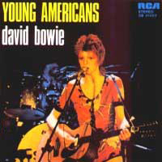
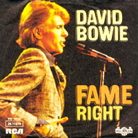

Initially angling to commission a painting from Normal Rockwell, the US artist known for his depictions of everyday American life, Bowie changed tack when Rockwell's wife informed him her husband would need six months to complete a new work. Turning instead to photographer Eric Stephen Jacobs, Bowie asked for a cover photo that replicated an image Jacobs had taken of his then choreographer, Toni Basil, for the cover of arts and entertainment magazine After Dark. Backlit and shot on a sound stage in LA, Jacobs later gave the image its distinctive airbrushed effect with some translucent oil, applied with Q-tips, resulting in one of the most era-defining David Bowie album covers. "There was no smoke in the picture," Jacobs revealed to Bowie fan site Bowie Golden Years in 2018. "I totally painted that in."
Photographer: Eric Stephen Jacobs
YOUNG AMERICANS
They pulled in just behind the bridge
He lays her down, he frowns
"Gee, my life's a funny thing
Am I still too young?"
He kissed her then and there
She took his ring, took his babies
It took him minutes, took her nowhere
Heaven knows, she'd have taken anything, but
(All night)
She wants the young American
(Young American, young American)
(She wants the young American)
(All right)
She wants the young American
Scanning life through the picture window
She finds the slinky vagabond
He coughs as he passes her Ford Mustang
But Heaven forbid, she'll take anything
But the freak, and his type, all for nothing
He misses a step and cuts his hand, but
Showing nothing, he swoops like a song
She cries, "Where have all Papa's heroes gone?"
(All night)
She wants the young American
(Young American, young American)
(She wants the young American)
(All right)
But she wants the young American
All the way from Washington
Her bread-winner begs off the bathroom floor
"We live for just these twenty years
Do we have to die for the fifty more?"
All night
He wants the young American
(Young American, young American)
(He wants the young American)
(All right) All right
He wants the young American
Do you remember, your President Nixon?
Do you remember, the bills you have to pay?
Or even yesterday?
Have you been the un-American?
Just you and your idol sing falsetto
'Bout Leather, leather everywhere
And not a myth left from the ghetto
Well, well, well, would you carry a razor
In case, just in case of depression?
Sit on your hands on a bus of survivors
Blushing at all the Afro-Sheeners
Ain't that close to love?
Well, ain't that poster love?
Well, it ain't that Barbie doll
Her heart's been broken just like you and
(All night)
All night, you want the young American
(Young American) young American
(You want the young American) All right
All right
You want the young American
You ain't a pimp and you ain't a hustler
A pimp's got a Cadi and a lady got a Chrysler
Black's got respect, and white's got his soul train
Mama's got cramps, and look at your hands ache
(I heard the news today, oh boy)
I got a suite and you got defeat
Ain't there a man who can say no more?
And ain't there a woman I can sock on the jaw?
And, ain't there a child I can hold without judging?
Ain't there a pen that will write before they die?
Ain't you proud that you've still got faces?
Ain't there one damn song that can make me break down and cry?
All night
I want the young American
(Young American) young American
(I want the young American)
All right
I want the young American, young American
(Young American, young American)
(I want the young American)
(All night)
You want I, I want you
(Young American, young American)
(I want the young American)
(All right)
All I want is the young American
(Young American, young American)
(I want the young American)
(All night)
WIN
(Hey, it ain't over)
Me, I hope that I'm crazy
I feel you driving and you're only the wheel
Slow down, let someone love you
Ooh, I've never touched you since I started to feel
If there's nothing to hide me
Then you've never seen me hanging naked and wired
Somebody lied, I say it's hip
To be alive
Now your smile is spreading thin
Seems you're trying not to lose
Since I'm not supposed to grin
All you've got to do is win
(Ooh, that's all you've got to do)
(Ooh, it ain't over)
Me, I'm fresh on your pages
Secret thinker sometimes listening aloud
Life lies dumb on its heroes
Wear your wound with honor, make someone proud
Someone like you should not be allowed
To start any fires
Now your smile is spreading thin
Seems you're trying not to lose
Since I'm not supposed to grin
All you've got to do is win
(Ooh, that's all you've got to do)
(Ooh) It ain't over
Now your smile is spreading thin
Seems you're trying not to lose
Since I'm not supposed to grin
All you've got to do is win
(Ooh, that's all you've got to do)
(Ooh) All you got to do is win (it ain't over, no)
And your smile is spreading thin (Ooh, seek and believe in you)
It seems you're trying not to lose (Ooh, it ain't over, no, no)
Since I'm not supposed to grin (Ooh, that's all you got to do)
All you've got to do is win (Ooh, it ain't over, no)
(Ooh, seek and believe in you)
All you've got to do is win (Ooh, it ain't over, no, no)
Woo-hoo! (Ooh) All you've got (that's all you've got to do)
Is all you've got (Ooh, it ain't over)
It ain't over
FASCINATION
I've got to use her
Every time I feel fascination
I just can't stand still, I've got to use her
Every time I think of what she put me through, dear
Fascination moves, sweeping near me
Still, I take ya
(Fascination) fascination
(Sure enough) fascination
(Takes a part of me) takes a part of me
(Can a heartbeat) can a heartbeat
(Live in the fever) live in the fever
(Raging inside of me?)
(Fascination) fascination
(Oh, yeah) oh, yeah
(Takes a part of me) takes a part of me
(I can't help it) I can't help it
(I've got to use her) I've got to use her
(Every time) fascination comes around
Ooh
(Fascination)
Your soul is calling like when I'm walking
Seems that everywhere I turn I hope you're waiting for me
I know that people think that I'm a little crazy
Ooh, but pleasure seeks this thing, I think I like fascination
Still, I take ya
(Fascination) fascination
(Sure enough) fascination
(Takes a part of me) come on, come on, come on, come on
(Can a heartbeat) can my heartbeat
(Live in the fever) live in the fever
(Raging inside of me?) raging inside of me?
(Fascination) fascination
(Oh, yeah) oh, yeah
(Takes a part of me) come on, come on, come on, come on
(I can't help it) I can't help it
(I've got to use her) I've got to
(Every time) every time
Fascination comes around
(Fascination) sure enough
(Sure enough) takes a part of me
(Takes a part of me) can a heartbeat
(Can a heartbeat) live in the fever
(Live in the fever) raging
(Raging inside of me?) fascination
(Fascination) fascination
(Oh, yeah) fascination
(Takes a part of me) fascinate, ah, oh babe
(I can't help it) fascination
(I've got to use her) I've got to use her
(Every time) Every time
Fascination comes around
(Fascination)
(Fascination) fascination
(Sure enough)
(Fascination) takes a part of me
(Yeah, yeah) can a heartbeat
(Fascination) live in the fever
(Yeah, yeah) raging inside of me?
(Fascination) fascination
(Yeah, yeah) oh, yeah
(Fascination) fascination
(Yeah, yeah) oh, yeah
(Fascination) oh, yeah
(Yeah, yeah) oh, yeah
(Fascination) takes a part of me
(Yeah, yeah) I cannot help it
(Fascination) I can't help it
(Yeah, yeah) I've got to use her
(Fascination) every time
(Yeah, yeah) fascination
(Fascination)
(Yeah, yeah) fascination
(Fascination)
Fascination
Takes a part of me
Can a heartbeat live in the fever raging inside of me?
Fascination takes a part of me
I can't help it, got to use her
Every time, every time
Every time fascination comes around
RIGHT
Taking it all the right way
Keeping it in the back
Taking it all the right way
Never no turning back
Never need, no, never no turning back
Flying in just a sweet place
Coming inside and safe
Flying in just a sweet place
Never been known to fail, never been, no
Never been known to fail
(Wishing) wishing you
(Wishing) wishing that sometimes (sometimes)
Doing it, doing it right
Till (doing it) one time (one time)
Gets you when you're down
(Nobody, nobody, do it again, get off)
Ah, sometimes, doing
Wishing sometimes (give it back)
Up there, up there (giving it)
Oh, my darling
(No) Ah, my darling, (giving it) ah (up there) why?
(Gimme, gimme) up there! (yeah) gimme, doing
Taking with me (sometimes)
Loving it, doing it (right) until (take it) one time
Gimme (doing it)
Giving it (giving it back)
(Taking it all the right way) taking it
(Keeping it in the back) hey, hey
(Taking it all the right way)
(Never no turning back, never need, no)
(Never no turning back)
Taking it all the right way
Keeping it in the back
Taking it all the right way
Never no turning back, never need, no
Never no turning back
Taking it (Taking it all the right way)
(Keeping it in the back)
Taking it (Taking it all the right way)
(Never no turning back, never need, no)
(Never no turning back)
Flying in just a sweet place
Coming inside and safe
Flying in just a sweet place
Never been known to fail, never been, no
Never been known to fail
(Taking it all the right way) Taking it all the right way
(Keeping it in the back) Keeping it in the back
(Taking it all the right way) Taking it all the right way
(Never no turning back, never need, no) Never
(Never no turning back, never need, no)
(Never no turning back, never need, no)
(Never need, no)
(Never no turning back, never need, no)
(Never no turning back, never need, no)
(Never, never, never)
(Never, never, never)
(Never, never, never, never, never need, no)
(Never, never)
(Never, never, never)
(Never no turning back, never, never, no)
(Never no turning back, no, no, no)
(Never no turning back, never, never, never)
(Never no turning back, no, no)
(A-never, a-never, a-never, a-never)
(A-never, a-never, a-never, a-never)
(A-never no turning back, never need, no)
(Never need, no)
(Never no turning back, never, never, never, never)
(Never no turning back, never need, no)
SOMEBODY UP THERE LIKES ME
He's everybody's token, on everybody's wall
Blessing all the papers, thanking one and all
Hugging all the babies, kissing all the ladies
Knowing all that you think about from writing on the wall
He's so divine, his soul shines
Breaks the night, sleep tight
His ever loving face smiles on the whole human race
He says, "I'm somebody"
He's got his eye on your soul, his hand on your heart
He says, "Don't hurry, baby
Somebody up there (somebody) likes me."
He's the savage son of the TV tube
Planets wrote the day was due
All the wisest men around
Predicted that a man was found
Who looked a lot like you and me, yeah
Everyone with sense could see
Nothing left his eye unmoved
He had the plan, he had to use
(Somebody) he's so divine, (ooh, ooh) his soul shines
Breaks the night, sleep tight (somebody up there)
(Somebody) his ever loving face (ooh, ooh)
Smiles on the whole human race
(Somebody, somebody, somebody up there)
(Somebody) he's got his eye on your soul
(Ooh, ooh) and his hand on your heart
He says, "Don't hurry, baby
Somebody up there (somebody)..."
Somebody plays my song in tune
Makes me, makes me, makes me stronger for you, babe
Was a way when we were young, that
Any man was judged by what he'd done
But now you've pick them on the screen (what they look like)
Where they've been
Keep your eye on your soul and your hand on your heart
He says, "Don't hurry, baby
Somebody up there (somebody)..."
Leaders come, they hate all the people know
That given time, the leaders go
Tell me, can they hold you under their spell?
Can they walk and hold you as well as a
Smile like Valentino? Could he sell you anything?
(Somebody, somebody)
Keep your eye on your soul, keep your hand on your heart
He says, "Don't hurry, baby
Somebody up there (somebody) likes me."
(Somebody, somebody, somebody, somebody)
Yeah, can't remember (somebody) peace so well
Oh, space to ramble, (somebody, somebody) space to boogie
Soul shine (ooh-ooh), so divine
Somebody (ooh-ooh, somebody)
Soul shine (Ooh-ooh), so divine
Somebody (ooh-ooh)
(Somebody)
Somebody, somebody, somebody
Yeah, can't remember peace so well
Can't remember peace so well
Can't remember peace so well
Soul shines (somebody)
Soul shines, so divine, somebody (somebody)
Soul shines, so divine, somebody (somebody)
ACROSS THE UNIVERSE
Words are flowing out like endless rain into a paper cup
They slither wildly as they slip away across the universe
Pools of sorrow, waves of joy
Are drifting through my opened mind
Possessing and caressing me
Nothing's going to change my world
Nothing's going to change my world
Nothing's going to change my world
Nothing's going to change my world
Images of broken light which dance before me like a million eyes
They call me on and on across the universe
Thoughts meander like the restless wind inside a letterbox
They tumble blindly as they make their way across the universe
Nothing's going to change my world
Nothing's going to change my world
Nothing's going to change my world
Nothing's going to change my world
Sounds of laughter, shades of life
Are ringing through my open ears
Inciting and inviting me
Limitless undying love, which shines around me like a million suns
It calls me on and on and on across the universe
Nothing's going to change my world
Nothing's going to change my world
Nothing's going to change my world
Nothing's going to change my world
Nothing, nothing, nothing
Nothing's going to
Nothing's going to change my world
Nothing, nothing, nothing
Nothing's going to
Nothing's going to change my world
(No, no, no, no, no, no)
Nothing's going to change my world
CAN YOU HEAR ME
Once we were lovers
Can they understand?
Closer than others I was your
I was your man
Don't talk of heartaches
Ooh, I remember them all
When I'm checking you out one day
To see if I'm faking it all
Can you hear me?
Can you feel me inside?
Show your love, love
Take it in right (take it in right)
Take it in right (take it in right)
There's been many others
(Oh-oh-oh-ooh) so many times
Sixty new cities, and what do I
What do I find?
I want love so badly
I want you most of all
You know, it's harder to take it from anyone
It's harder to fall
Can you hear me call ya?
Well, can you (hear me?)
Can you (feel me inside?)
Show your (love, love)
Take it in right (take it in right)
Take it in right (take it in right)
Well, can you hear me? (yeah)
Can you feel me inside? (I do)
Show your love (love, love)
Show me your sweet, sweet love, show me your love
Take it in right (take it in right)
Take it in right (take it in right)
Take it in right
To your love life, baby
Take it in right to your love life
Take it in right, take it in right
Right to your love life
Take it in right, ah
(Why don't you take it?) take it in, take it in right
(Why don't you take it?) Right down, right down
(Why don't you take it?) mm, why don't you take it?
(Right to your heart) can you hear me?
(Why don't you take it?) can you feel me?
(Why don't you take it?) can you take it in right?
(Why don't you take it?) ooh, right down, right down
(Right to your heart) can you take it? Feel me?
(Why don't you take it?) down, to right down
(Why don't you take it?) to your heart
(Why don't you take it?) to your heart
(Right to your heart) take it down, take it down
(Why don't you take it?)
(Why don't you take it?) take it in right
(Right to your heart)
FAME
Fame (fame) makes a man take things over
Fame (fame) lets him loose, hard to swallow
Fame (fame) puts you there where things are hollow
Fame (fame)
Fame, it's not your brain, it's just the flame
That burns your change to keep you in... sane (sane)
Fame (fame)
Fame (fame) what you like is in the limo
Fame (fame) what you get is no tomorrow
Fame (fame) what you need you have to borrow
Fame (fame)
Fame, "Nein! It's mine!" is just his line
To bind your time, it drives you to... crime
Fame (fame)
Could it be the best, could it be?
Really be, really, babe?
Could it be, my babe, could it, babe?
Could it, babe? Could it, babe?
Is it any wonder I reject you first?
Fame (fame) fame, fame, fame (fame)
Is it any wonder you are too cool to fool
Fame (fame)
Fame, bully for you, chilly for me
Got to get a rain check on... pain (pain)
(Fame)
Fame, fame, fame, fame, fame, fame, fame,
Fame
What's your name?
(Feeling so gay, feeling gay)
SINGLES

